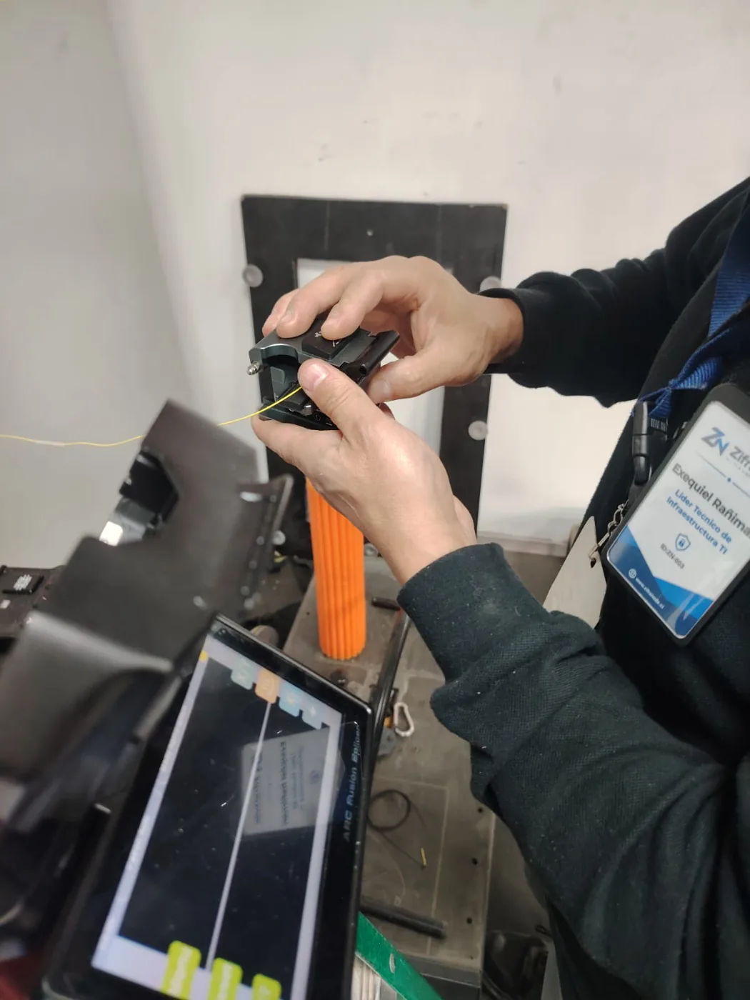
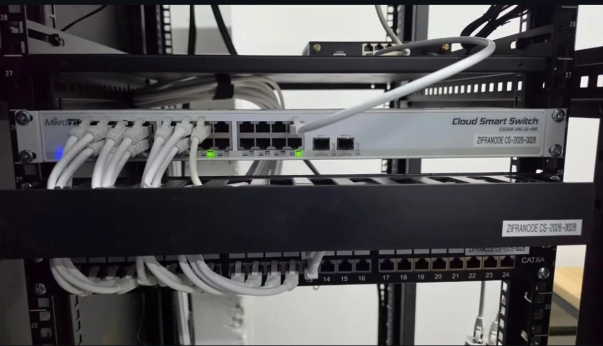
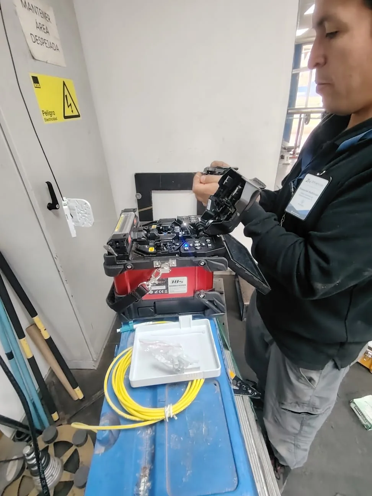

Redes y seguridad que funcionan en terreno.
Diagnosticamos, diseñamos e implementamos redes, WiFi, CCTV, control de acceso y fibra óptica para organizaciones en Santiago.


REDES / EN TERRENOUna infraestructura. Todo conectado.
Integramos la capa física, los equipos y la configuración para que cada parte funcione como un sistema.
Redes que responden.
LAN/WAN, WiFi empresarial, segmentación y fibra óptica.
↗
Espacios bajo control.
CCTV, cámaras IP y control de acceso integrados a la red.
↗
Una base bien hecha.
Cableado, racks, respaldo eléctrico y soporte técnico.
↗Antes de reemplazar equipos, encontramos la causa.
Una red lenta puede tener su origen en un enlace saturado, una mala segmentación o infraestructura compartida. Evaluamos el sistema completo para intervenir donde importa.
Conoce nuestro diagnósticoProyectos que hablan por sí solos.
Una selección de soluciones implementadas. Nuestra experiencia va mucho más allá de los casos publicados.

Seguridad centralizada. Infraestructura preparada para crecer.
CCTV, enlaces de fibra y control de acceso integrados en una plataforma más ordenada y preparada para ampliaciones.
Conocer el proyectoEstos son algunos de los muchos proyectos realizados por ZN Technology.
Del problema a una solución verificable.
Un proceso claro para decidir bien, ejecutar con orden y entregar una solución que pueda mantenerse.
- 01Levantamiento
- 02Diagnóstico
- 03Propuesta
- 04Implementación
- 05Pruebas
- 06Entrega
Conocimiento técnico, trabajo en terreno.
ZN Technology es la unidad tecnológica de ZifraNode SpA. Trabajamos en infraestructura TI, conectividad y seguridad tecnológica para organizaciones en Chile.
Diseñamos soluciones según el entorno real de cada cliente, con atención a la instalación, configuración y continuidad del servicio.
Conversemos sobre tu infraestructura¿Tu infraestructura está limitando tu operación?
Cuéntanos qué problema estás teniendo y evaluaremos la mejor forma de resolverlo.